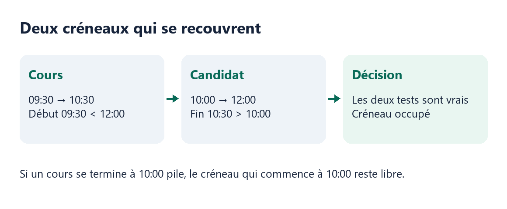
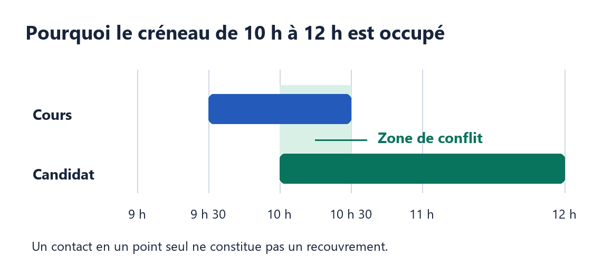

Comprendre le cours
Ce qu’un processus peut transmettre au processus parent
./Fils "$valeur" & lance le fils en arrière-plan. pid=$! mémorise son numéro. wait "$pid" bloque jusqu’à sa fin. Récupère aussitôt le statut avec statut=$?.
Un statut 0 représente généralement un succès. Pour communiquer le résultat d’un calcul entier arbitraire, affiche-le sur la sortie standard. Le statut a une plage limitée et sert au succès ou à l’erreur.

Filtrer des lignes avec une expression régulière
grep -E '[[:digit:]]{2}' fichier sélectionne une ligne avec deux chiffres contigus ou plus. grep -cE ... affiche le nombre de lignes correspondantes.
^[%#] reconnaît une ligne commençant précisément par pourcentage ou dièse. [[:lower:]] désigne une minuscule dans la locale utilisée.
Transformer un calendrier en créneaux disponibles
Lis le séparateur du CSV et normalise les noms de salles. Combine date et heure en un type date-heure. Écarte ou signale les lignes invalides, dont celles qui finissent avant de commencer.
Prévois une date de fin pour la recherche. Si tu parcours sans borne un calendrier incomplet, tu risques d’annoncer des disponibilités au-delà de la période qu’il couvre.

Comment trouver deux heures libres entre deux événements ?
Exemple complémentaire : une salle est occupée de 8 h à 10 h, de 9 h à 11 h, puis de 13 h à 14 h. Trie les réservations par début. Les deux premières se recouvrent et forment une seule période occupée de 8 h à 11 h.
Garde en mémoire la fin la plus tardive déjà rencontrée. La prochaine réservation commence à 13 h : 13 − 11 = 2 heures libres. Si tu gardais seulement la fin du premier cours, tu annoncerais un créneau commençant à 10 h alors que la salle est encore occupée.
Sigles et acronymes
- CSV · Comma-Separated Values
- Fichier texte de données tabulaires.
Exemple. Un fichier de calendrier peut séparer les colonnes Salle et Heure par un point-virgule. - PID · Process Identifier
- Numéro qui identifie un processus.
Exemple. Le shell utilise le PID d’un programme pour attendre sa fin. - UTF-8 · Unicode Transformation Format, 8-bit
- Encodage Unicode à longueur variable.
Exemple. En UTF-8, le fichier garde correctement les accents.
Du cours aux TD et TP
Le téléchargement contient le sujet original du TP7. La partie créneaux reprend le problème résolu dans le projet local de calendrier, avec des données fictives.
Questions TD & TP
TP7 · Expliquer le script Père/Fils et tester SIGKILL
Énoncé reformulé. Comparer le lancement normal, le lancement en avant-plan et le lancement avec exec. Observer ensuite le statut que le père reçoit si le fils est tué.
- En arrière-plan, stocke le PID puis attends-le avec
wait. Le fils reçoit 20 et renvoie 20 en sortie normale. - En avant-plan, récupère le statut juste après
./Fils "$valeur". Avecexec ./Fils "$valeur", le processus remplace son programme et ne revient pas aux instructions suivantes. - Dans la maquette, envoie
kill -KILL "$pid"pendant le sommeil du fils. Le père attend un statut 137 sous Bash. Pour la variante addition/soustraction, valide le nombre de paramètres et l’opérateur, puis renvoie la valeur calculée sur stdout.
TP7 · Écrire les trois filtres demandés
Énoncé reformulé. Compter les lignes contenant deux chiffres consécutifs, exclure celles commençant par % ou #, puis garder celles sans minuscule.
- Teste
grep -cE '[[:digit:]]{2}' exemple.txt. Une ligne peut contenir plusieurs paires mais n’est comptée qu’une fois. - Teste
grep -vE '^[%#]' exemple.txt. Une ligne qui commence par une espace suivie d’un dièse reste présente avec cet énoncé. - Teste
grep -v '[[:lower:]]' exemple.txt. Vérifie les majuscules, les chiffres et la ligne vide.
Projet · Trouver dix créneaux de deux heures sans conflit
Énoncé reformulé. À partir d’un calendrier CSV, d’une salle et d’une date de départ, afficher jusqu’à dix créneaux libres dans la période disponible.
- Charge le CSV en précisant le séparateur et transforme chaque date avec ses heures en deux bornes. Filtre les lignes de la salle demandée.
- Pour chaque jour ouvré et chaque créneau prévu, cherche un événement tel que
debut < fin_creneau and fin > debut_creneau. Affiche le créneau uniquement si aucun ne remplit ces deux conditions. - Teste un recouvrement partiel, un cours entièrement dans le créneau et deux intervalles qui se touchent. Arrête-toi au dixième résultat ou à la fin de la période couverte.